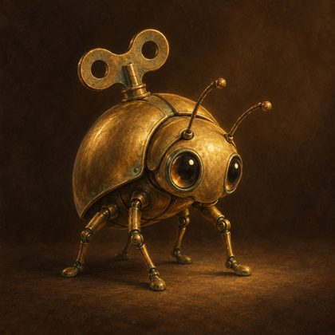

Wind-ups, jobs and the great key
How wind-ups are made, what each job does, and why keeping the great key wound matters.
On this page
Wind-ups do the gathering and the fighting, and you get more of them as you build homes.
Making wind-ups
- You need housing first. A Cell houses 3 wind-ups, a Comb 7, a Gallery 18 and, later on, a Spire 35. See Build and research.
- The Hatchery assembles a new wind-up about every 20 seconds while there is room, using 6 Oil each. Build more Hatcheries to go faster.
- Hatchery Tuning research adds 20% assembly speed per level. Idle wind-ups also help: each one adds 2% to the Hatchery's pace.
- Until the hive holds 8 wind-ups, assembly runs much faster than normal, so the first minutes are quick.
Jobs
Open the Jobs tab to assign wind-ups. The move buttons (x1, x10, All) change how many move at once. Each job appears when its research is done.
| Job | What it does | Needs |
|---|---|---|
| Oiler | Gathers 0.5 Oil per second | Nothing |
| Brazier | Gathers 0.4 Brass per second | Nothing |
| Coiler | Gathers 0.3 Springs per second | Coil Winding research |
| Draughtsman | Draws 0.2 Schematics per second | Draughting Table research |
| Tuner | Trains swarms: +1% swarm attack and health each | Swarm Drill, and floor 2 |
| Winder | Keeps the great key wound | Swarm Drill |
| Swarmer | Waits ready for battle; every swarm is made from Swarmers | Swarm Drill |
Those rates are per wind-up before any bonus. Research, the Offering Altar, perks, the moth and the Lantern Glow all multiply them.
Tip Gearshards cannot be gathered by a job. They only drop from Gatekeepers and the Rust.
The great key and Tension
Every wind-up runs on its spring, and the hive has one great key. The key slowly unwinds, and the hive's Tension meter shows how wound it is:
- Work and attack run at 50% plus half of the Tension. Fully wound is 100%.
- The key unwinds by about 1% every six seconds, but never below half wound. That means work and attack never fall below 75%, even if you are away all night.
- Tapping Wind adds 4% each tap.
- Winders hold it steady. About one wind-up in ten as a Winder is enough to keep the key at full.
- The Winding Touch research makes every gathering tap also wind the key, a quarter as much as a tap on the key itself.
The key only starts to unwind once you research Swarm Drill, so the early game stays at full speed.
Tip Active players tap Wind between other things. Idle players give about 10% of their wind-ups the Winder job and forget about it. Either is fine.
Tapping
Tapping gathers one resource at a time and stays useful all game thanks to a group of Tapping researches. Nimble Claws adds to each tap, Borrowed Hands makes a tap also gather a slice of what your workers bring in, Moth's Favour doubles taps on the resource where the moth has settled, and Overflowing Hands lets taps fill stores a little past their limit. Details are in Build and research.
Helpers
Later on the hive earns its own helpers, who do the busywork for you. See Helpers and automation.